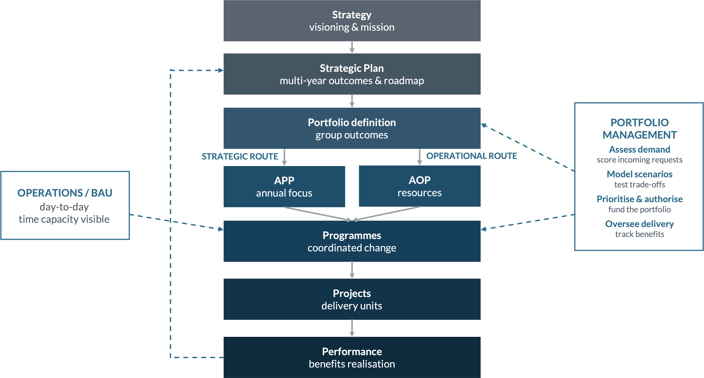

01 · The framework
The hierarchy
Two decisions shape the hierarchy: APP and AOP are split into distinct bands, and portfolio definition is elevated directly under SP (it can start as soon as outcomes exist), while portfolio management runs in parallel with strategic planning rather than above it. Linked responsibilities with a continuous feedback loop, not a strict containment triangle.

The fork
Portfolio definition triggers a fork per outcome. Strategic → strategic projects back into decision-making, or cascades to APP → programmes → AOP. Operational → the AOP placeholder, allocated after APP focus to programmes → operational projects. Both converge on programmes → projects → delivery, then benefit evidence flows back up.
02 · Triple-P rules
What defines each level
The rules that separate the three levels. Where they differ is the whole point.
| Rule | Portfolio | Programme | Project |
|---|---|---|---|
| What it is | Enduring investment/decision domain grouping outcomes | Finite, coordinated set of projects for a shared benefit | Finite unit of change with a defined deliverable |
| Reason it exists | Outcomes need cross-cutting investment authority | A benefit needs several projects coordinated | A deliverable needs producing |
| Time boundary | Enduring, no fixed end; dated plans & reviews | Bounded but derived from its projects' window | Fixed start & end |
| Scope | Portfolio composition & authority boundary | Objective + coordinated benefits (not a deliverable) | A bounded deliverable with acceptance criteria |
| Ownership | Owner/sponsor + forum, ownership starts here | Owner accountable for benefit realisation | Manager accountable for delivery |
| Funding | Holds/authorises the investment envelope | Allocated a fund; disburses to projects | Draws on programme funds via business case |
| Authorisation | Established at SP time; charter approved | Defined from APP; objective approved | Business case aligned to the fund's outcome |
| Governance | Primary decision forum; rules per portfolio | Governance layer only if maturity needs it | Escalates up; SteerCo optional |
| Benefits | Rolls up; tests if funds achieved the outcome | Confirms objective achieved; pushes up | Defined up front; tracked past closure |
| Dependencies | Across programmes & portfolios | Across its projects & other programmes | To other projects |
| Change/closure | Restructured/closed when mandate ends | Closes when benefit realised | Closes at deliverable acceptance |
Nesting rules
| 1 | Portfolio may contain sub-portfolios, delivery programmes, and (guardrailed) projects. |
| 2 | Programme sits under a portfolio or sub-portfolio; may contain sub-programmes. |
| 3 | Project sits under a programme; directly under a portfolio only where guardrails allow. |
| 4 | Nothing authorised sits outside a portfolio; ownership starts at the portfolio. |
| 5 | BAU/operations is a separate layer, not a project (tenders, marketing & comms). |
| 6 | Guardrails define which small/local projects may bypass portfolio governance. |
Public vs private configuration
| Area | Public sector | Private sector |
|---|---|---|
| Outcome basis | Service outcomes, equity, mandate | Customer value, margin, growth |
| Funding rule | Committed but not disbursed until release conditions met | Capital allocation + revenue generation tracked |
| Planning link | APP outputs/targets, AOP activities/budgets | Integrates with business planning; change vs BAU |
| Evidence | Risk, affordability, capacity, benefit + compliance | Risk, affordability, capacity, benefit + commercial return |
03 · Framework breakdown
Components under each area
The sub-components that sit under each framework area, with the public/private overlay.
Strategy & Strategic Plan
| Component | Definition |
|---|---|
| Vision & mission | The direction being set |
| Strategic themes | Enduring focus areas strategy is organised around |
| Strategic assumptions | If/then beliefs the strategy depends on; tested over time |
| Multi-year outcomes | What to achieve over the 5-year cycle, as goalposts |
| Outcome grouping | Grouping by focus/impact/resource, becomes the basis of a portfolio |
| Roadmap & scorecard | The horizon; scorecard built after outcomes are set |
Portfolio definition
| Component | Definition |
|---|---|
| Portfolio composition | Which outcomes/initiatives/decisions form each portfolio |
| Portfolio roadmap | Multi-year roadmap, pulled from the SP horizon |
| Strategic/operational fork | Classifies each portfolio as strategic or operational |
| Investment thesis | Why invest; indicative envelope and capacity |
| Portfolio charter | ID, sponsor, forum, decision rights, boundaries, review date |
Strategic planning: APP & AOP
| Component | Definition |
|---|---|
| APP: annual focus | One-year slice of the roadmap; outputs & targets tied to outcomes |
| APP: programme allocation | Outcomes/outputs allocated to programmes; prioritisation model |
| AOP: activities | Departmental activities and operational outputs beyond APP |
| AOP: resources & budgets | Committed resources; budget-programme classification (kept separate) |
Portfolio management
| Component | Definition |
|---|---|
| Demand inflow | Intake from SP/APP/AOP + portfolio-originated; per-portfolio rules |
| Business case assessment | Submission & assessment; who may submit is a governance rule |
| Governance forums & rules | Configurable per portfolio; centralised or decentralised |
| Backlog · scenarios · prioritisation | Retained demand; alternative mixes tested; ranking feeds delivery |
| Authorisation & oversight | Decision, funding ceiling, conditions; exceptions & forecasts |
| Support escalation | Accountable person resolves or pushes support up without a forum |
Delivery, operations & enablers
| Component | Definition |
|---|---|
| Programme & project mgmt | Programme objective/scope; project business case, types, dependencies; roll-up/down health |
| Operations / BAU | Day-to-day work; time tracking; ops-vs-project allocation (e.g. 80/20); BAU targets |
| Resources | People/capacity; capital/investment; strategic (thinking) capacity; external resources |
| Financials | Capital allocation + revenue generation (new); committed vs disbursed |
| Performance & benefits | Portfolio KPIs (inherit-from-SP optional); data-linked to projects & individual contracts; post-closure benefit tracking |
04 · Module structure
Modules and tabs
The three things StratXe does not have today: portfolio definition, portfolio management, and the project/programme adjustments to support them.
| Module | Status | Framework area |
|---|---|---|
| Strategy & SP | Exists | Strategy, SP |
| Strategic thinking | New | Outcomes → portfolio pre-definition |
| Portfolio | New | Definition + management |
| APP | Exists | Strategic planning (annual) |
| AOP / Operations | + BAU layer | Strategic planning + operations |
| Programmes | Redesign | Work management |
| Projects | Redesign | Work management |
| Performance | Extend | Benefits & data-linked KPIs |
Portfolio module tabs
| Tab | Purpose | Key sub-views |
|---|---|---|
| My Workspace | Persona-based decision queue | Approvals, governance, reviews per profile |
| Portfolio Dashboard | Continuous tracking | Capacity · Delivery · Benefits · Cost; roll-up & roll-down health |
| Strategic Plan / Outcomes | Linked SP outcomes | Outcomes; operational measures; KPI links |
| Portfolio Plans | Multi-year horizon | Horizon; plan details; scenarios |
| Demand | Inflow & intake | Sources; business-case assessment; backlog |
| Prioritisation | Demand → authorised work | Scoring; top-down vs bottom-up reconciliation |
| Investments / Approvals | Authorisation & funding | Approvals; funding ceilings; release gates (public) |
| Programmes & Projects | Composition roll-up | Inventory; cross-level dependencies; health |
| Resources | Capacity & allocation | People; capital; strategic capacity; external; conflicts |
| Financials | Financial performance | Capital allocation; revenue; committed vs disbursed |
| Benefits Realisation | Value tracking | Baseline/target/due; post-closure; benefit-to-fund test |
| Governance | Forums & rules | Forums; decision rights; escalation; SteerCo rules |
| Assumptions | Strategic assumption register | If/then; validation status; review triggers |
MVP build order
The MVP is the foundations: define portfolios, structure them into programmes and projects, apply the governance layer. Not the full workflow.
- Strategic thinking → outcomes → portfolio definition.
- Portfolio composition + charter + roadmap.
- Programmes/projects redesign (business case, types, dependencies).
- Governance layer (forums, rules, approvals): foundations only.
- Benefits realisation + performance roll-up.
Reference documents: triple-p-rules.md, framework-design.md, framework-breakdown.md, module-structure.md.